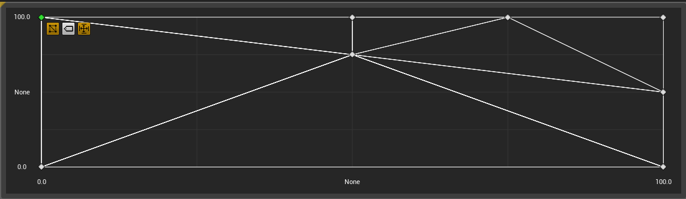
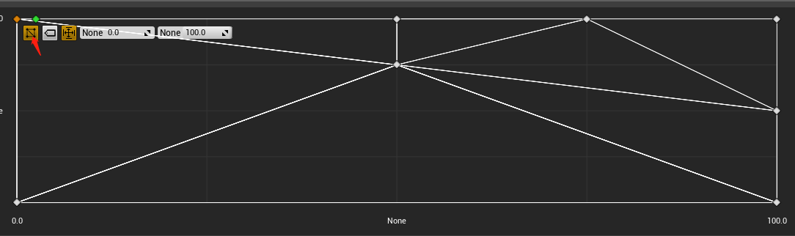
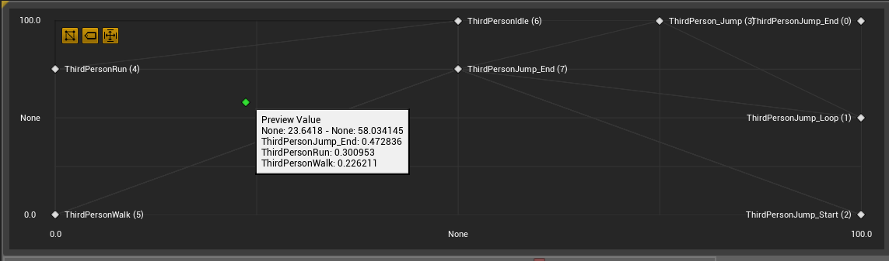

Epic has already give documentation about blend spaces in UE4, though. It is necessary for me to get to know what is happening in low-level when we run a blend space in an animation blueprint.
What is Happening in Blend Space Editor?
When we are going to play with a blend space, we have to set up the horizontal&vertical axis settings in Editor. And I assume you have basic knowledge about blend space editor, if not, please refer to the official documentation.
In general, you can setup how final pose is interpolated between animations in the Grid Editor:

After you have done with Axis Settings and Blend Samples, or modify those settings, data would be re-sampled and grid elements would be re-generated.
Triangulation
If you hit the Show Triangulation button, you can see that all sample points forming a triangle list:

UE4 use Delaunay triangulation for triangulation because we need to interpolate inside a triangle. And Delaunay triangulation tend to avoid sliver triangles. I will post an article about Delaunay triangulation some day.

Generate Grid Element Information
We need to calculate additional information for each grid point after triangulation. In particular, index and weight of each vertice of the triangle that this grid point locates.


As you can see in the image above, each grid point contains index and weight information. Such information would be stored along with asset.
How are Animations Sampled?
We need a 2D coordinate to tell the blend space what we want. But how on earth are those animation sampled? How to get the weight of each animation?

The calculation is truly easy. Firstly we’ll determine which grid our blend position locate in:

Then we can get each point’s information like what we explained above. Then we can easily bi-interpolate between these values, and get the final sample weights we need.
Blend Space Interpolation
A lot of work has been done in UE4 to give a good blending effect between animations.
Axis Interpolation
UE4 allows us to interpolate our axis parameter value. If Interpolation Time has inputs, the real blend position would be a interpolation between our old sample value and the new value.

Target Weight Interpolation
Target weight interpolation is a fantastic feature for locomotion. This allows us to directly interpolate between weights instead of parameters.

For example, if we interpolate input, when we move from left to right rapidly, we’ll interpolate through forward animation, and this might not be what we want.
If we use target weight interpolation, forward animation would be skipped, and it will look much better!
And actually this is what Unity need most. I have add this feature into our customized Unity Engine, and it works in Call of Duty Mobile and Cross Fire Mobile, it works great!